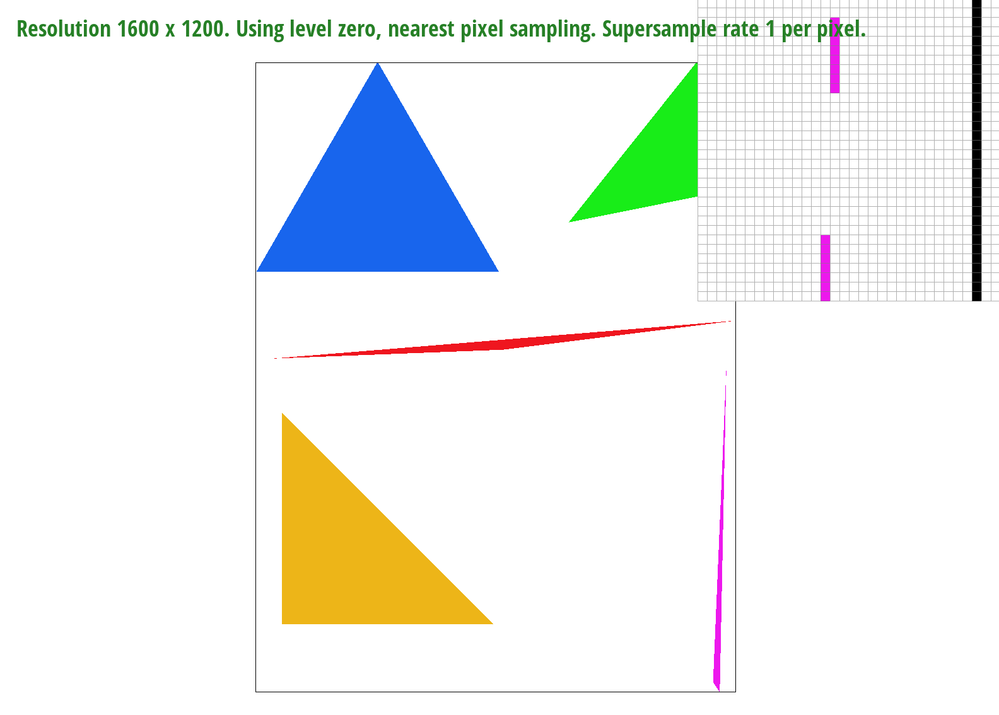
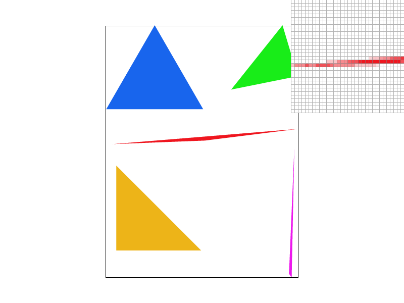
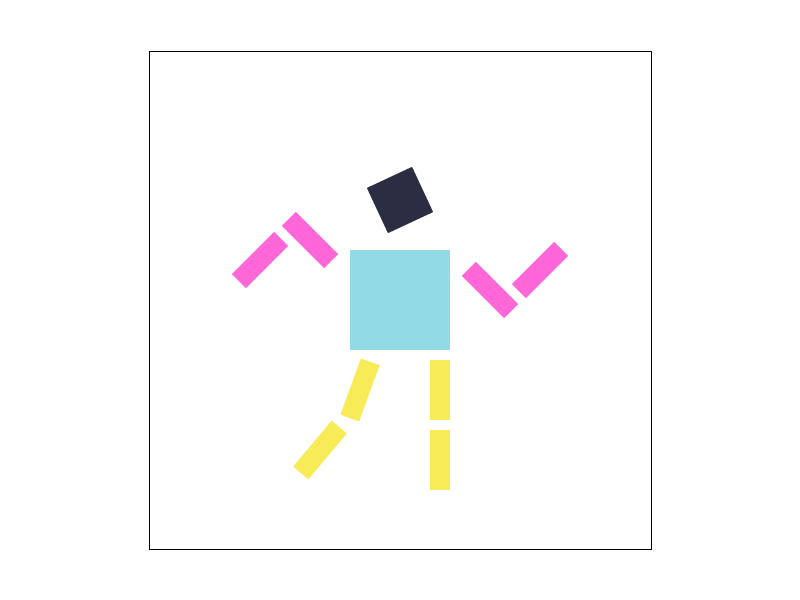
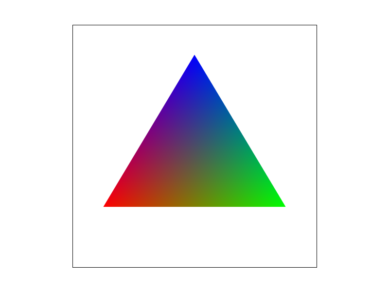
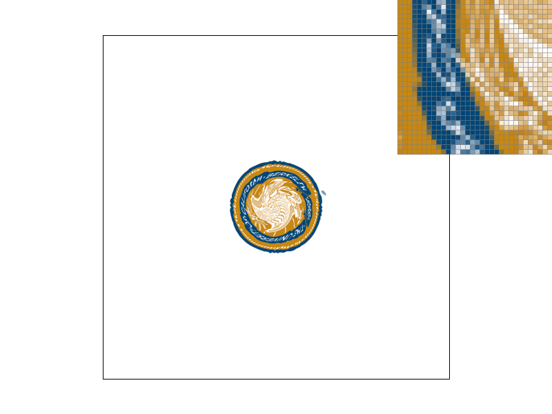
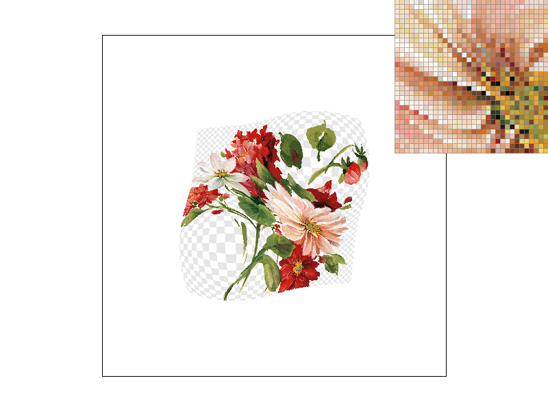

Overview
In this project, we built a rasterizer that supports drawing triangles, supersampling, transforms, and texture antiasliasing using techniques like barycentric interpolation and level sampling. Specifically, we were able to take an image described in vector graphics format and transform it into a raster image consisting of pixels with some lil ole formulas and a bit of linear algebra :crying:
This project was really eye opening and challenging in that it showed us new applications of known math concepts, and let us explore open endedly even after basic concepts were understood. The process itself was an enjoyable experience!
Section I: Rasterization
Part 1: Rasterizing single-color triangles
Given three points, we can rasterize a triangle by a) finding its boundary box and b) coloring pixels within the box that pass the line test.
To calculate the boundary box, we took the min of x, min of y, max of x, and max of y to determine our iteration space. This also results in a better runtime than iterating through the entire coordinate grid.
After finding the boundaries, we traverse each pixel in the bounded space and check whether it passed the line test. We created a helper function here to check whether the dot product of (point vertex – triangle vertex) and its normalized line was > 0, in which case the point fell within the space. We called this function three times for each line.
To account for both clockwise and counter clockwise implementations, we simply checked whether the line test was equivalent across all lines. We found this solution really elegant as it meant the winding orientation across lines was consistent (either all were inside or all were outside bounded space), and the implementation not as nitty gritty as anticipated. On first glance, this check wasn’t obvious to us and we tried accounting for cw/ccw cases before the line test using coordinates.
This algorithm is no worse than checking each sample within the bounding box, as it only traverses pixels necessary to draw the triangle and not the whole grid. In other words, our algorithm is computationally comparable to checking each sample within the bounding box.
|

|
Part 2: Antialiasing triangles
Supersampling is a useful, relatively intuitive way to antialias images by taking multiple measures of color at a given point, "averaging" them out, and setting the onscreen pixels to that "average" color. Our supersampling algorithm builds off of the initial rasterization algorithm in Task 1. We still identify the three points and lines of the triangle, the three normal vectors, and the upper and lower X and Y boundaries. We declare int N as the square root of the sample rate (so 1, 2, 3, or 4).
Then, we loop through each point in those bounds N x N (loops i and j) times so that each point is sampled at the indicated rate. Each time, we determine the exact x and y value of the supersample based on what loop i and j we're in. We use the same helper inside_area function as part 1, and to account for both kinds of winding, we check if the point is either inside OR outside all three lines. This is because if a point is outside all three, that means the winding was counter-clockwise and the normals point outside the triangle instead of inside.
We then set the color of the appropriate index of sample_buffer, which was resized in set_sample_rate and set_framebuffer_target by a factor of the sample rate. To make sure we access the right index, we scale x, y, and the width by N, and then add the i and j indicating which supersampled point we're examining. By doing supersampling, ie taking the color at multiple points within a single pixel, we are essentially sampling at a higher resolution to get a more visually 'accurate' render of the image.
We then downsample to have just one sample/color per pixel, which gives the effect of 'blurring' edges and corners, or antialiasing. In resolve_to_framebuffer, we follow a similar series of nested loops. For all xy points, we start with a black Color (0, 0, 0), then add the color for each supersample of a given point by looping N x N times. We then scale those RGB values down by dividing by the sample rate and set the appropriate framebuffer value/pixel to that fitlered color. Finally, to account for rasterize_point and rasterize_line, we also modified fill_pixel to cycle N x N times per pixel.
|
|
|

|
The triangles are antialiased and appear smoother on the edges and sharp corners because of the supersampling. In the thinner places, like where the pixel inspector is centered, points are surrounded by whitespace in the background. By supersampling, the white background becomes part of the sample space and the final pixel color is paler, giving the impression of blurring instead of hard pixel edges.
Part 3: Transforms
To play with the implemented transforms, Cubeman (in a fresh outfit) has his arms and legs translated and rotated to give the impression of dancing. We wanted the arms like a wave, so we rotated each limb by 45 or -45 degrees, then translated them so the rotated positions appeared more natural. He has one leg put slightly out, also with additional rotation and translation. He otherwise has the same translation and scaling as his red counterpart.
Section II: Sampling
Part 4: Barycentric coordinates
Barycentric coordinates are a way of determining where a point in a triangle lies based on its 'proximity' to the three points of the triangle. All coordinates within a triangle can be defined through a weighted sum of its points. This example shows a triangle with pure red, pure green, and pure blue vertices - each internal point is a mix of these three RGB values, appearing smoothly blended.
|

|

|
Part 5: "Pixel sampling" for texture mapping
Pixel sampling is determining what color each pixel in screen space will be; in texture mapping, it involves sampling texels and determining the pixel color based on the texel samples. Nearest pixel mapping rounds the xy pixel value to the closest uv texel value and assigns that texel sample color to the pixel sample color. Bilinear sampling helps with antialiasing in a way similar to supersampling. For every pixel value we get, we check the four nearest texel sample locations. Using linear interpolation between the texels, we are able to determine a 'weighted average' color based on the texture map to give the impression of a more accurate color for that position.
|
|
|
|
|

|
Where nearest neighbor sampling gives a fair amount of jaggies, bilinear sampling has some antialiasing even at 1 sample per pixel. This is because the blurring effect is a result of checking multiple texels, rather than checking multiple pixels. The antialiasing still improves with more samples per pixel as well, as expected. Checking more points leads to a smoother color gradation. Bilinear sampling is also better for magnification, when there are multiple pixel samples per texel. This is because each pixel sample may be too small to exactly correspond to a texel sample, so the 'weighted average' of bilinear interpolation helps show a more accurate color.
Part 6: "Level sampling" with mipmaps for texture mapping
Level sampling, or mipmapping, is used to improve the rendering performance of images by sampling from minified textures. This allows for different levels of image granularity based on how to best convey the distance between an object and its viewpoint. With each decreasing mipmap level, you can expect each it to be a lower resolution than the previous level. Level 0 has the highest resolution.
Our algorithm determines the best mipmap level by calculating the texture coordinates (u, v) for (x, y), (x+1, y), and (x, y+1). We returned the appropriate mipmap level by taking log base 2 of the maximum absolute square sum of partial dervatives with respect to x and y. Then, based on the level sample method given, we either used nearest-pixel sampling or bilinear sampling.
Between pixel sampling, level sampling, and number of samples per pixel, there are numerous tradeoffs in speed, memory usage, and antialiasing. Pixel sampling is fast and requires little memory, but can produce aliasing artifacts with no antialiasing power. Level sampling provides antialiasing, but reqruies more memory and may cause slower performance based on time to select the mipmap. The per pixel technique is great for antialiasing, but can be slow and require a lot of memory.
|

|
|
|
|
|
Section III: Art Competition
If you are not participating in the optional art competition, don't worry about this section!